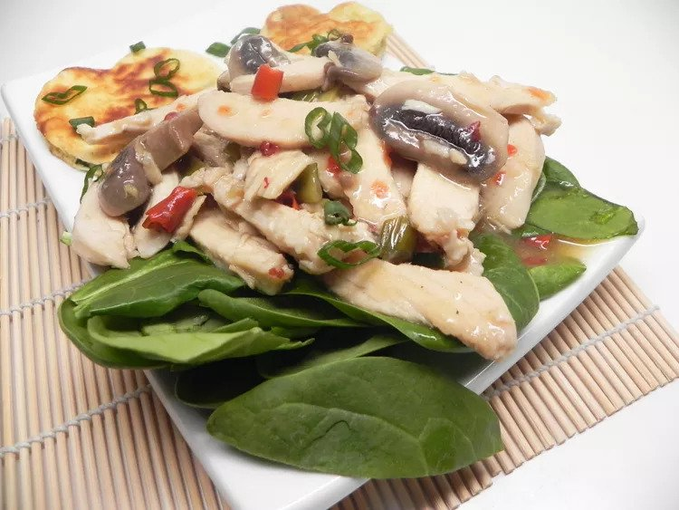

Chinese Dong'an Chicken

This is a classic Hunan chicken dish, which is simple and delicious. A parboiled chicken is chopped up,
then stir-fried with chiles, ginger, Szechuan peppercorns, and vinegar.
Ingredients
- 1 (2 pound) whole chicken
- 1 tablespoon cornstarch
- 1 tablespoon cold water
- 6 tablespoons peanut oil
- 1 ½ tablespoons grated fresh ginger
- 2 teaspoons finely chopped dried chile peppers
- 3 tablespoons vinegar
- 1 ½ tablespoons rice wine
- 20 Szechuan peppercorns, crushed
- salt to taste
- 2 spring onions, chopped, or more to taste
- ⅛ teaspoon monosodium glutamate (MSG)
- 2 teaspoons sesame oil
Steps
- Place chicken in a stockpot with water to cover; bring to a boil and cook until juices run clear,
at least 20 minutes. An instant-read thermometer inserted into the thickest
part of the thigh near the bone should read 165 degrees F (74 degrees C).
Remove chicken; set aside to cool. Reserve 1/2 cup of the cooking liquid.
- Remove chicken meat from bone; cut meat into 1/2-inch by 2-inch strips.
Mix cornstarch and cold water together in a small bowl. Toss meat in 1/2 of the cornstarch mixture.
- Heat peanut oil in a wok or large skillet over high heat. Add chicken mixture, ginger, and chiles;
cook and stir until fragrant, 2 to 3 minutes. Add reserved cooking liquid, vinegar, rice wine, peppercorns, and salt. Return to boil;
cook and stir until mixture is almost dry, about 3 minutes.
Stir in spring onions, monosodium glutamate, and remaining cornstarch mixture; cook until sauce is thickened, 2 to 3 minutes more.
Drizzle with sesame oil.